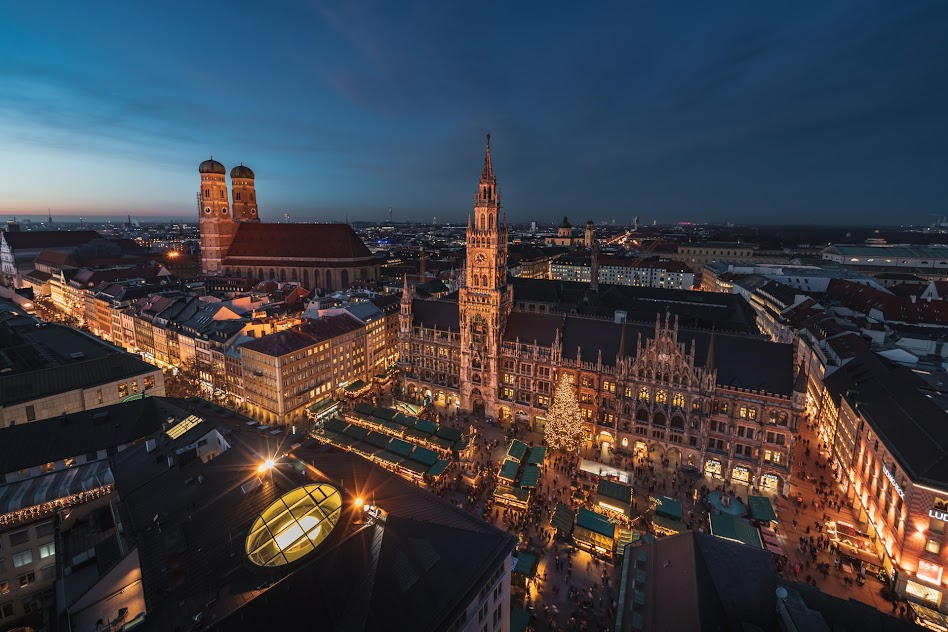

Benvenuti sul sito dedicato a Monaco di Baviera! Questo spazio nasce dalla mia esperienza diretta durante un viaggio di istruzione che mi ha permesso di scoprire e apprezzare questa splendida città. Il sito vi guiderà alla scoperta dei suoi monumenti più emblematici, dei parchi, delle piazze e dei musei che la rendono una delle mete più affascinanti d’Europa. L'obiettivo è offrire una panoramica autentica della città, basata sulle emozioni e le impressioni che ho vissuto durante il mio viaggio, per darvi un'idea di cosa aspettarvi e per ispirarvi a visitarla.
